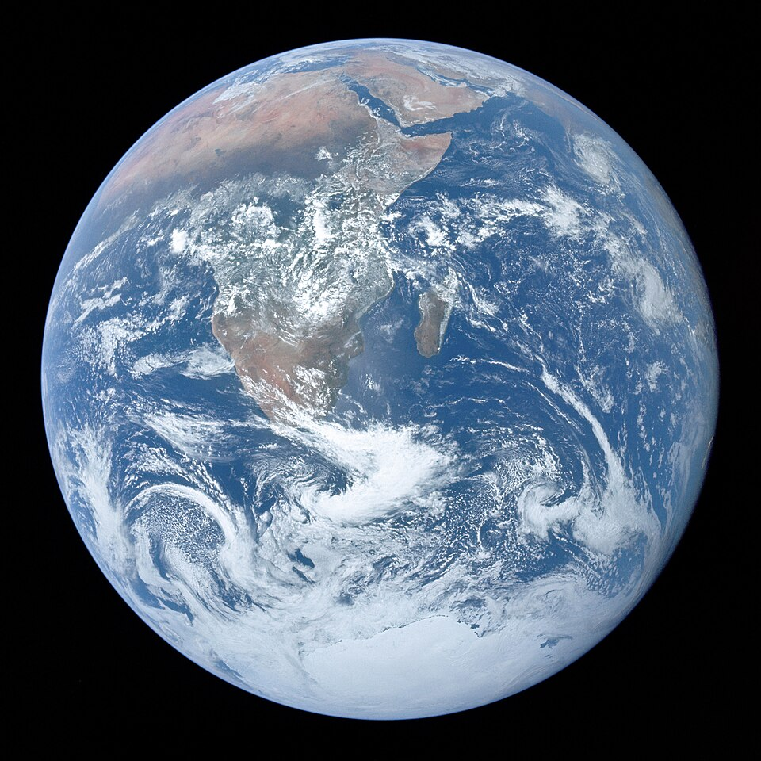
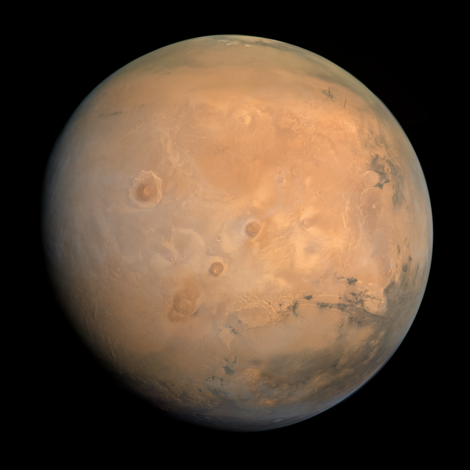

Vesolje je ogromen prostor, ki se še kar naprej širi.Vesolje je neskončo in polno različnih čudes, ki jih človek še ni raziskal. Na vsakem koraku lahko naletiš na kakšno odkritje. Kakor veste je v vesolju trenutno 8 priznanih planetov. Na naši spletni strani se boste sprehodili skozi vsakega izmed njih in ga dodobra spoznali. Uživajte v branju in želimo vam da se boste naučili česa novega.
Merkur je 1. po oddaljenosti od Sonca.Več o njem si lahko preberete pod rubriko Merkur. Link:Merkur

Venera je 2. po oddaljenosti od Sonca.Več o njej si lahko preberete pod rubriko Venera. Link:Venera

Zemlja je 3. po oddaljenosti od Sonca.Več o njej si lahko preberete pod rubriko Zemlja. Link:Zemlja
Mars je 4. po oddaljenosti od Sonca.Več o njem si lahko preberete pod rubriko Mars. Link:Mars
Jupiter je 5. po oddaljenosti od Sonca.Več o njem si lahko preberete pod rubriko Jupiter. Link:Jupiter

Saturn je 6. po oddaljenosti od Sonca.Več o njem si lahko preberete pod rubriko Saturn. Link:Saturn

Uran je 7. po oddaljenosti od Sonca.Več o njej si lahko preberete pod rubriko Uran. Link:Uran

Neptun je 8. po oddaljenosti od Sonca.Več o njem si lahko preberete pod rubriko Neptun. Link:Neptun